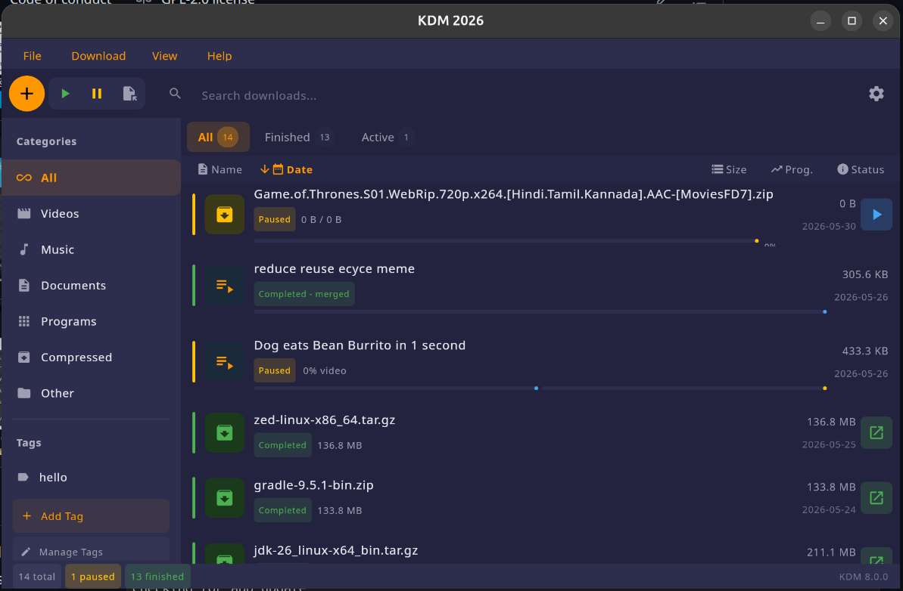

YouTube videos, entire playlists, or any file on the web — KDM accelerates your downloads up to 5×.

Purpose-built for modern downloading — from YouTube binges to mission-critical files.
Paste any YouTube link — single video or an entire playlist. KDM downloads them all with automatic yt-dlp setup — zero configuration needed.
Smart dynamic file segmentation splits files into multiple streams, accelerating downloads by up to 500%. Big files finish in minutes, not hours.
Works seamlessly with Chrome, Firefox, Edge, Opera, and Vivaldi — captures download links automatically so you never miss a file.
Built-in conversion to MP3, MP4, and 100+ device presets. Save entire YouTube playlists as high-quality audio with one click.
Network dropped? Power failure? Never lose progress. Resume broken downloads right where they stopped — no restarts, no wasted bandwidth.
Schedule downloads at specific times, manage multiple queues, and set speed limits. Your bandwidth, your rules.
A clean, modern interface built with Kotlin & Jetpack Compose Desktop.
Free. Open source. Available for every major platform.
No ads. No spyware. Always free.
{kind=link}
{kind=link}
{kind=link}
{kind=link}
{kind=link}
{kind=link}
{kind=link}
{kind=link}